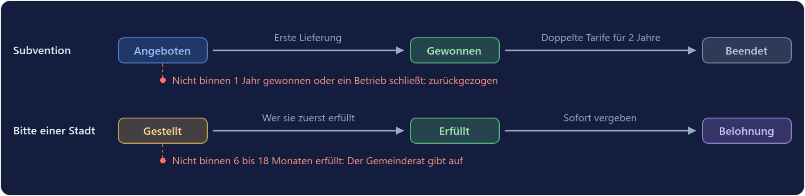

Subventionen und Bitten
Angebote für alle: doppelte Tarife und was Gemeinderäte sich wünschen.
Ab und zu bietet die Bezirksregierung eine Subvention an, und Gemeinderäte äußern Bitten. Ziele listet sie unter Gelegenheiten, und die Nachrichten melden, wenn eine angeboten, gewonnen oder vorbei ist.
Subventionen
- Eine Subvention nennt eine Fracht, woher sie kommt und wohin sie geht. Sie kommt von einem Betrieb, den seit 90 Tage niemand bedient hat, oder bei Abfall aus einer Stadt ab 400 Einwohnern. Sie geht an einen Betrieb, der sie nimmt, oder bei Gütern, Lebensmitteln oder Zeitungen an eine Stadt ab 400 Einwohnern (1.000 für Autos). Die Strecke ist 15 bis 60 Felder lang.
- Deine erste Lieferung an eine Station, die das Ziel erreicht, geladen an einer Station, die die Quelle erreicht, gewinnt sie. Umladungen unterwegs zählen: Es kommt darauf an, wo die Fracht zuerst geladen wurde.
- Von da an bringen deine Lieferungen auf dieser Strecke das Doppelte, und zwar 2 Jahre lang. Alle anderen auf der Strecke bekommen den üblichen Tarif.
- Ein Angebot, das niemand wahrnimmt, verfällt nach einem Jahr. Schließt ein Betrieb an einem der beiden Enden, wird das Angebot zurückgezogen, und eine schon gewonnene Subvention endet damit.
- Solange weniger als 2 angeboten werden, kommt jeden Monat mit 12% Wahrscheinlichkeit eine neue dazu.


Bitten der Städte
Ein Gemeinderat bittet um etwas, das zu seiner Stadt passt, mit einer Frist. Eine Stadt hat höchstens eine Bitte, und ihr Fenster zeigt sie unter Bitten und Belohnungen; größere Städte bitten öfter.
| Bitte | Wer bittet | Erfüllt durch | Belohnung, eine von |
|---|---|---|---|
| Personenverbindung | Städte ab 700 Einwohnern | Die ersten Fahrgäste in eine Stadt 15 bis 60 Felder entfernt mit 200 Einwohnern oder mehr, die noch niemand anbindet. Zwischen zwei Städten ab 1.500 kann der Gemeinderat es per Zug wollen. | ein Jahr exklusive Transportrechte +25 Ansehen beim Gemeinderat |
| Versorgung | Städte ab 400 Einwohnern | Güter oder Lebensmittel (die Bitte nennt eins davon), in die Stadt geliefert: etwa 2,5 Einheiten im Monat je 100 Einwohner, über die ganze Frist. | sechs Monate schnelles Wachstum einen Zuschuss von 50.000 $ |
| Besucher | Städte mit einer Attraktion | Fahrgäste, gebracht an eine Station, die die Attraktion erreicht: etwa 4 im Monat je 100 Einwohner, über die ganze Frist. | einen Zuschuss von 50.000 $ +25 Ansehen beim Gemeinderat |
| Service | Städte, in denen jemand eine Station hat | Jede deiner Stationen in der Stadt mit 60% oder mehr bewertet, an 12 Monatsenden in Folge. Ein Monatsende darunter startet die Zählung neu. | ein Jahr Stationen und Depots zum halben Preis +25 Ansehen beim Gemeinderat |
- Eine Bitte lässt 6 bis 18 Monate Zeit, eine Service-Bitte 18. Bis zu 2 sind gleichzeitig auf der Karte offen, und jeden Monat kommt mit 12% Wahrscheinlichkeit eine neue dazu.
- Der Fortschritt jeder Firma zählt für sich, und wer zuerst ankommt, gewinnt. Die Belohnung steht fest, wenn der Gemeinderat bittet, und wird mit der Bitte angezeigt.
- Das Fenster Ziele zeigt, wie weit du bist und wie weit der beste Rivale ist, mit einem Knopf, der die Stadt zeigt.
Belohnungen
- +25 auf dein Ansehen beim Gemeinderat.
- Ein Zuschuss von 50.000 $.
- Exklusive Transportrechte für ein Jahr: Die Stationen anderer Firmen in der Stadt bekommen keine neuen Fahrgäste und keine neue Fracht, Lieferungen in die Stadt werden aber weiter bezahlt. Sie enden früher, wenn der Inhaber pleitegeht.
- Stationen und Depots zum halben Preis für ein Jahr, überall dort, wo diese Stadt die nächste im Umkreis von 18 Felder ist.
- Ein Bauboom: Die Stadt wächst 180 Tage lang schnell, wie wenn du Neubauten förderst.